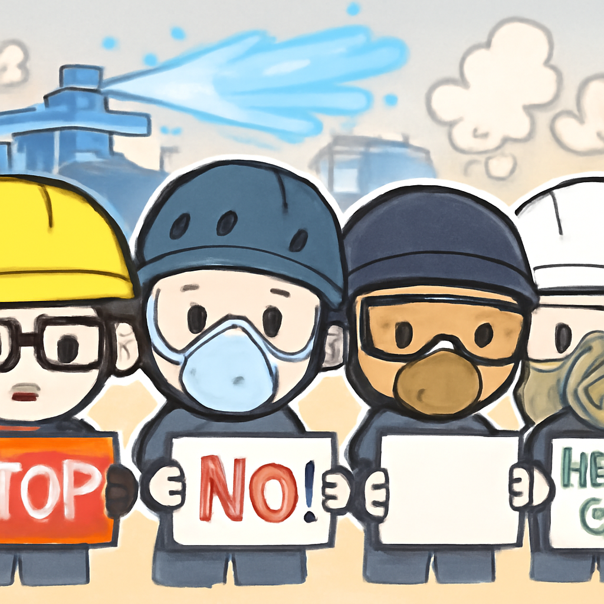

其一 · 伊朗 · 美國與伊朗達成停火協議
美國與伊朗達成為期60天的停火協議。
在伊朗，最近美國與伊朗達成了一項為期60天的停火協議，這將打開霍爾木茲海的航道，並解除美國對伊朗港口的海軍封鎖。這對於中東局勢及全球能源市場都有重要影響，因為這一地區的穩定性直接關係到油價及貿易。希望這次協議能夠為雙方的核問題談判鋪平道路，但這就像是踩在一條不穩的繩子上，不知道何時會掉下去。
🔗 原始新聞 ↗
2026-06-15 · 以古觀今，以笑抗愁
美國與伊朗達成為期60天的停火協議。
在伊朗，最近美國與伊朗達成了一項為期60天的停火協議，這將打開霍爾木茲海的航道，並解除美國對伊朗港口的海軍封鎖。這對於中東局勢及全球能源市場都有重要影響，因為這一地區的穩定性直接關係到油價及貿易。希望這次協議能夠為雙方的核問題談判鋪平道路，但這就像是踩在一條不穩的繩子上，不知道何時會掉下去。
🔗 原始新聞 ↗
英國和日本簽署重大投資協議。
在倫敦，英國政府宣布與日本達成了一項高達180億英鎊的投資協議，主要涉及基礎設施和海上風電項目。這不僅將為英國帶來大量投資，還可能促進兩國的經濟合作，讓人對未來的經濟發展充滿期待。希望這筆錢能如約而至，別到時候又變成了「未來分期付款」的夢。
🔗 原始新聞 ↗
G7 峰會前夕瑞士爆發抗議衝突。

在瑞士日內瓦，G7 峰會即將召開，當地爆發了抗議活動，抗議者與警方發生了衝突，警方甚至出動了水炮和催淚彈來驅散人群。這些抗議活動反映了許多人對全球議題的擔憂，特別是在氣候變化和經濟不平等方面。可以想見，這樣的場面可能會成為峰會的「前戲」，讓各國領導人感受到壓力。
🔗 原始新聞 ↗
英國首次獨立行動查獲俄油輪。
在英國，英國海軍成功查獲一艘隸屬於俄羅斯影子艦隊的油輪，這是英軍首次單獨行動來阻止此類船隻。此舉顯示了英國在制裁俄羅斯方面的決心，並可能對俄羅斯的能源出口造成影響，讓人不禁想知道，俄國會不會因此也開始「尋租」其他路線。
🔗 原始新聞 ↗
日本王室可能允許收養男性親戚。
在日本，立法院正在起草一項計劃，考慮讓王室可以收養遙遠的男性親戚，這一舉措旨在解決王室男性繼承人短缺的問題。不過，社會上也出現了對女性天皇的呼聲，這讓人思考日本王室的未來究竟會如何發展。畢竟，無論如何，王室的選擇總是充滿話題性。
🔗 原始新聞 ↗